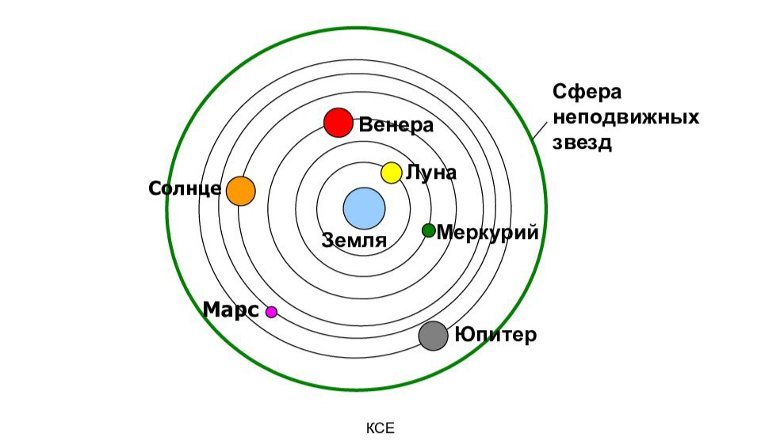
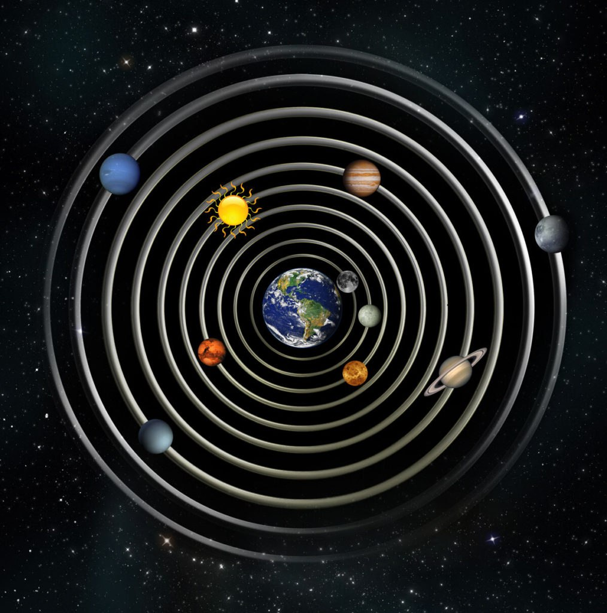
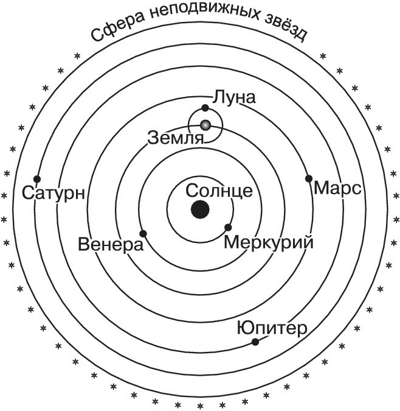
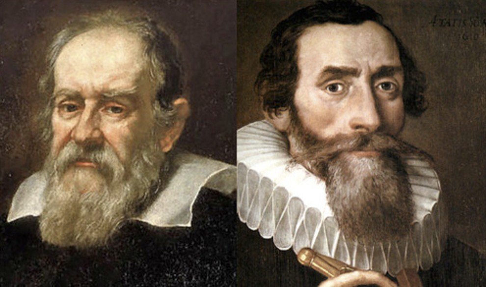

Гелиоцентрическая система Аристотеля
Еще в 340 г. до н. э. Аристотель в своем трактате "О небе" сформулировал два веских довода в пользу того, что Земля имеет форму шара, не является плоской.

Гелиоцентрическая система Птолемея
В I веке н. э. идея о том, что Земля находится в центре Солнечной системы, была развита Птолемеем в целостную космологическую модель.

Гелиоцентрическая система Коперника
В 1514 г. польский священник Николай Коперник предложил модель, где Солнце находится в центре Солнечной системы.

Гелиоцентрическая система Галилея и Кеплера
В годы создания первого телескопа 1609 г. итальянец Галилео Галилей и немец Иоганн Кеплер - публично выступили в поддержку теории Коперника.
